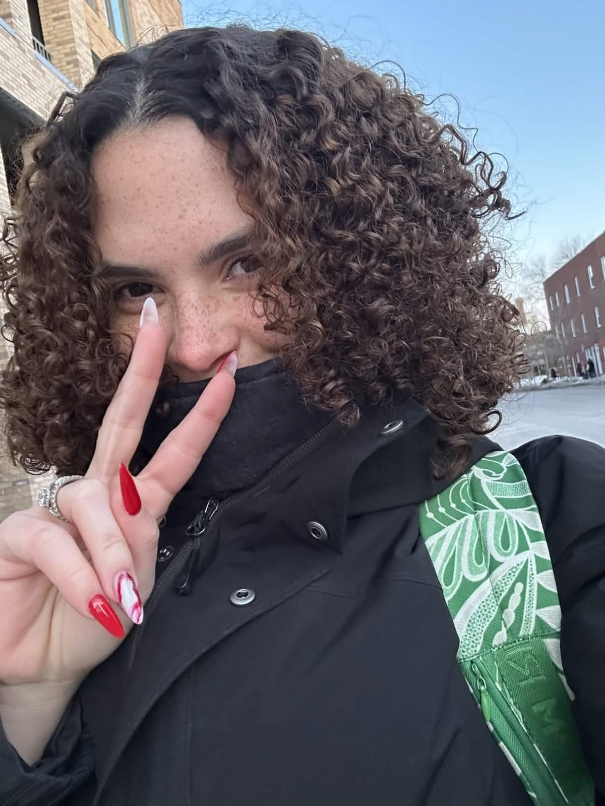
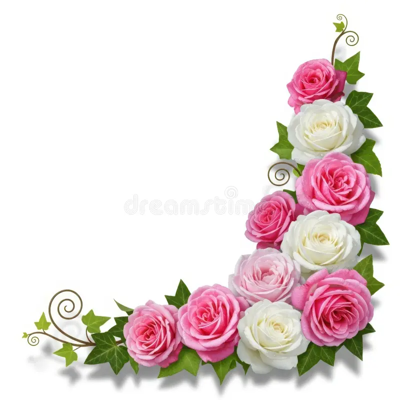

Amar você é sentir que o mundo inteiro se recolhe para nos deixar espaço. É perceber que, em meio ao caos da vida, existe um lugar só nosso, feito de silêncio, de olhares que entendem sem precisar de palavras, de toques que dizem mais do que qualquer frase poderia. Você não é apenas alguém que habita meus dias, você é a luz que ilumina até os cantos que eu nem sabia que existiam dentro de mim. Você não é apenas meu amor, você é minha necessidade, meu refúgio e meu fogo. Amar você é saber que, mesmo quando tudo se desfaz ao redor, quando a vida perde sua cor e seus ruídos, eu ainda teria você, e isso basta para que meu coração continue batendo, com uma intensidade que só você pode despertar.

E quando penso em nós, sinto um silêncio que fala mais alto que qualquer palavra: é a certeza de que somos feitos para nos encontrar, mesmo que a vida tente nos separar. Amar você é sentir a eternidade em um instante, é viver e morrer dentro de um único olhar, e mesmo assim querer mais, sempre mais. Porque cada pedaço de você que toco, cada parte do seu ser que conheço, me lembra que o amor verdadeiro não é suave: ele é intenso, urgente, profundo, e capaz de transformar a alma para sempre. E talvez seja por isso que, quando fecho os olhos e penso em você, sinto como se o próprio universo respirasse entre nós dois. Como se o tempo diminuísse o passo apenas para observar esse encontro estranho e raro entre duas almas que se reconheceram no meio do caos do mundo, amar você é como olhar para o céu numa noite infinita e perceber que, entre bilhões de estrelas, existe uma que o coração reconhece sem precisar de explicação. Cada silêncio, cada olhar, cada instante em que nossos mundos se aproximam parece carregar algo antigo, como se nossas almas tivessem se procurado muito antes de nossos nomes sequer existirem. porque quando você está perto, algo dentro de mim desperta de um jeito que eu nunca soube explicar. Não é apenas desejo. Não é apenas carinho. É como se cada parte do meu ser entendesse, finalmente, que encontrou o lugar onde sempre quis repousar, e talvez o mundo nunca entenda a dimensão disso. Talvez para os outros seja apenas mais uma história entre tantas, mas dentro de mim existe uma certeza que não se desfaz: se o destino realmente existe, ele tem o seu nome. E se o amor verdadeiro deixa marcas na alma, então a minha já aprendeu algo que jamais vai esquecer: amar você não é apenas sentir. É reconhecer, em meio a todo o universo, o único coração capaz de fazer o meu bater como se tivesse descoberto a própria eternidade. ❤️
Você é a razao pelo qual minha vida é feliz. Eu te amo Nath❤️!

Nath,
Eu tentei por muito tempo encontrar uma maneira simples de dizer o que sinto por você. Mas toda vez que começo, as palavras parecem pequenas demais para algo que cresceu tanto dentro de mim. Porque isso que sinto não nasceu de repente… foi acontecendo em silêncio, pouco a pouco, como o nascer do dia que chega devagar até que, quando percebemos, já iluminou o céu inteiro. Hoje eu sei que meu coração fez a melhor escolha da minha vida.
Eu te amo.
Não de uma forma leve ou passageira, como tantas histórias que o tempo leva embora. Eu te amo de uma forma profunda, intensa, quase impossível de explicar. Você se tornou parte dos meus pensamentos mais constantes. Parte das minhas esperanças mais bonitas. Parte daquele lugar dentro de mim onde guardamos aquilo que realmente importa. Às vezes me pego imaginando um universo inteiro feito de possibilidades… mil caminhos diferentes, mil encontros aleatórios. E mesmo assim, in todos eles, sinto que acabaria encontrando você. Porque algumas pessoas parecem ter sido escritas na nossa história muito antes de aparecerem nela.
Nath, existe algo em você que me prende de uma forma que não sei explicar. não é apenas sua beleza, nem apenas a forma como você fala ou sorri. É algo mais profundo, é a maneira como sua presença mexe com tudo dentro de mim, como se meu coração reconhecesse você antes mesmo de eu entender o porquê. E talvez isso pareça intenso demais, e foi essa intensidade que eu buscou por toda a minha vida, mas a verdade é que quando penso em você, sinto uma vontade imensa de te proteger, de te cuidar, de estar perto o suficiente para que você nunca se sinta sozinha neste mundo, porque você não é apenas alguém que eu gosto, você é alguém que eu quero pertencer, e quero que a mim pertença. Alguém que eu quero na minha vida, nos meus dias, nas meus histórias que ainda nem aconteceram, nos meus pensamentos a todo momento e principalmente em todos os momentos durante a vida inteira.
Se o amor é uma força capaz de transformar as pessoas, então você já mudou algo profundo em mim. Mudou a forma como vejo o futuro, mudou a forma como meu coração entende o que é desejar alguém de verdade. E se um dia você olhar para mim e se perguntar o que significa para mim… eu espero que perceba isso: Você não é apenas um sentimento passageiro, você é aquela pessoa rara que o coração escolhe sem pedir permissão, aquela presença que transforma tudo ao redor, aquela alma que, de alguma forma misteriosa e linda, fez o meu coração entender que amar você é a coisa mais verdadeira que eu já senti.
Eu amo você, Nathalia, e faço disso meu sentimento eterno. E talvez o mundo nunca saiba exatamente o que acontece dentro de mim quando penso em você. Entre bilhões de pessoas neste planeta, foi você que o meu coração escolheu reconhecer. Foi como se algo dentro de mim olhasse para você e didesse, sem pedir permissão: “É ela.” E desde então, Nathalia, existe algo em mi que não consegue mais imaginar a vida passando sem que você esteja em algum lugar dentro dela. Porque algumas pessoas aparecem… e simplesmente passam, mas outras chegam e mudam o eixo do nosso universo. Você fez isso comigo e se um dia alguém me perguntasse qual foi o momento mais verdadeiro da minha vida, talvez eu não apontasse para um dia específico. Eu apontaria para você.
Porque amar você não é apenas um sentimento que eu carrego, é a forma mais honesta que meu coração encontrou de existir. Meu corpo não é só físico quando estou com você, ele vira linguagem, vira ponte, vira vibração, e minha alma não fica presa no abstrato, ela encontra forma, encontra calor, encontra realidade, é como se você fosse o ponto onde o invisível se torna tangível. Que o que sentimos não seja só emoção passageira, que seja alinhamento, que seja consciência, que seja presença tão profunda que o tempo perca importância, eu não quero apenas viver algo com você, eu quero que nossa energia vrie um espaço onde corpo e alma não tenham fronteira, onde olhar seja conversa, onde silêncio seja entendimento onde toque seja expansão, que seja no ponto onde dois corações não precisam se procurar, porque já batem como um só, é sobre entender que a minha verdade emocional encontra morada na sua.
Quando eu estou perto de você, não é apenas o meu corpo que responde, É como se a minha alma se ajustasse. Como se partes minhas que viviam dispersas finalmente encontrassem um centro, eu não quero só estar com você, eu quero me fundir no silêncio que existe entre nossos pensamentos. quero que o toque não seja apenas pele, seja energia atravessando matéria. ❤️
🎁
Um pequeno feito, pra uma vida inteira de felicidades
Calculando tempo...
eu sou o sol que queima por você todos os dias, ardendo no horizonte apenas para ter a esperança de tocar seu céu. Mas o mais estranho… é que mesmo sendo opostos, mesmo sendo elementos que deveriam se afastar. algo em nós insiste em se aproximar. eu sinto algo que não consigo explicar. Algo que arrepia a pele, algo que acelera o coração, algo que faz o mundo inteiro parecer pequeno demais para conter o que nasce entre nós. Porque a verdade é esta: Se você é a lua, eu queimaria como sol para iluminar suas noites. E se o universo inteiro tentasse nos separar… eu atravessaria cada estrela, cada mar, cada noite infinita apenas para encontrar você novamente Algo que não é apenas paixão. É destino. E destinos assim, não se apagam. Eles queimam para sempre. ❤️
Você é a minha melhor escolha todos os dias, você é meu porto seguro. Eu te amo, Nathalia! Hoje, amanha e pela a eternidade💍❤️